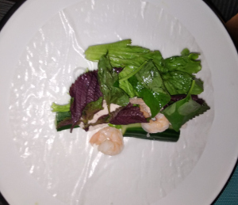
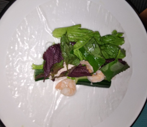

Spring Rolls
 


Ingredients:
- Shrimps, pork belly (or other meet), wrap paper, rice sticks (vermicelli), cucumbers, lettuce, mint leaves, cilantro
- Sauce: Peanut butter, oyster sauce, garlic
- Sauce2: vinegar, daikon, carrot, vietnamese fish sauce
How to make it:
- Cook shrimp and pork (boil/steam/broil etc)
- Chop everything
- Wet the wrap paper and roll it with everything
- Dip in the sauce
Sauce:
- Add peanut butter and oyster sauce in a pot and heat it up for a few minutes
Sauce 2: Mix vinegar, daikon, carrot, vietnamese fish sauce, garlic in a container and add sprinkle on the veggies